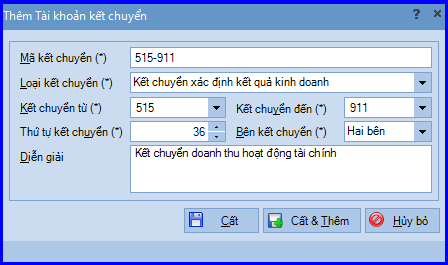
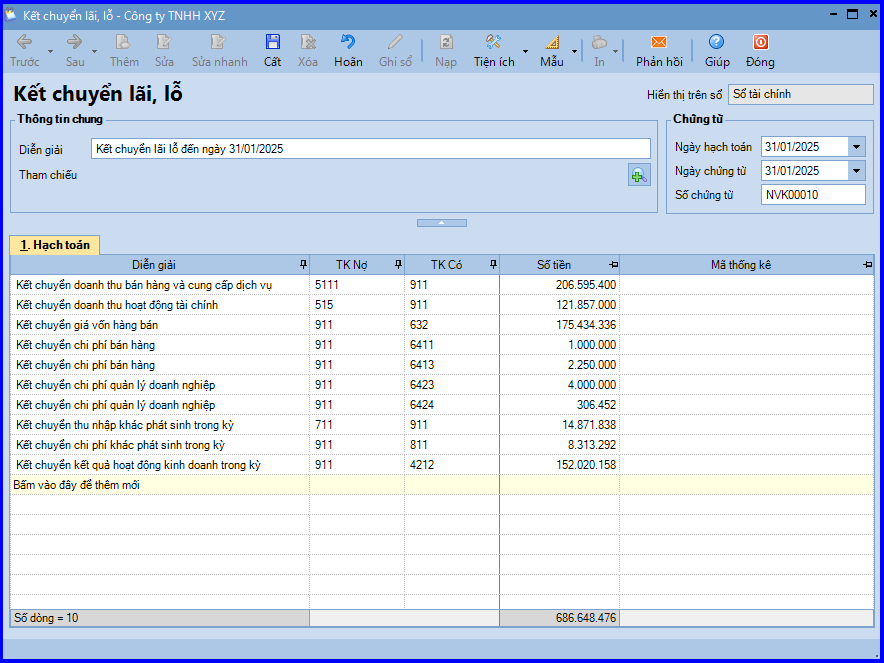

Hướng dẫn cách hạch toán ghi sổ nghiệp vụ kết chuyển lãi lỗ để xác định kết quả kinh doanh trên phần mềm Misa
Phần mềm kế toán Misa cho phép lập chứng từ kết chuyển cuối kỳ để xác định kết quả hoạt động sản xuất kinh doanh như: kết chuyển doanh thu, kết chuyển chi phí và kết chuyển lãi lỗ.
I. Cách định khoản hạch toán kết chuyển lãi lỗ để xác định kết quả kinh doanh:
1. Kết chuyển lãi chênh lệch tỷ giá hối đoái:
Nợ TK 413 - Chênh lệch tỷ giá hối đoái
Có TK 515 - Doanh thu hoạt động tài chính
2. Kết chuyển lỗ chênh lệch tỷ giá hối đoái:
Nợ TK 635 - Chi phí tài chính
Có TK 413 - Chênh lệch tỷ giá hối đoái
3. Kết chuyển các khoản giảm trừ doanh thu (TT200):
Nợ TK 511 - Doanh thu bán hàng và cung cấp dịch vụ
Có TK 521 - Các khoản giảm trừ doanh thu
4. Cuối kỳ kết chuyển doanh thu bán hàng, doanh thu hoạt động tài chính và các khoản thu nhập khác:
Nợ TK 511 - Doanh thu bán hàng và cung cấp dịch vụ
Nợ TK 515 - Doanh thu hoạt động tài chính
Nợ TK 711 - Thu nhập khác
Có TK 911 - Xác định kết quả kinh doanh
5. Cuối kỳ kết chuyển giá vốn hàng hóa, chi phí tài chính, chi phí khác, chi phí bán hàng, chi phí quản lý doanh nghiệp:
Nợ TK 911 - Xác định kết quả kinh doanh
Có TK 632 - Giá vốn hàng bán
Có TK 635 - Chi phí tài chính
Có TK 811 - Chi phí khác
Có TK 641 - Chi phí bán hàng
Có TK 642 - Chi phí quản lý doanh nghiệp
Có TK 6421, 6422 (Chi phí bán hàng, chi phí quản lý doanh nghiệp TT133)
6. Cuối kỳ kết chuyển chi phí thuế thu nhập doanh nghiệp:
Nợ TK 911 - Xác định kết quả kinh doanh
Có TK 821 - Chi phí thuế thu nhập doanh nghiệp
7. Kết chuyển kết quả hoạt động kinh doanh trong kỳ
Nếu lãi:
Nợ TK 911 - Xác định kết quả kinh doanh
Có TK 421 - Lợi nhuận chưa phân phối
Nếu lỗ:
Nợ 421 - Lợi nhuận chưa phân phối
Có TK 911 - Xác định kết quả kinh doanh
II. Các bước hạch toán ghi sổ nghiệp vụ kết chuyển lãi lỗ để xác định kết quả kinh doanh trên phần mềm Misa
Bước 1: Khai báo các cặp tài khoản kết chuyển cuối kỳ
- Vào "Danh mục\Tài khoản\Tài khoản kết chuyển" => chọn chức năng "Thêm".

- Khai báo cặp tài khoản kết chuyển, sau đó ấn "Cất".
CHÚ Ý: Phần mềm đã xây dựng sẵn hệ thống các cặp tài khoản kết chuyển, kế toán có thể khai báo bổ sung hoặc sửa đổi các cặp tài khoản kết chuyển đã có phù hợp với yêu cầu quản lý của doanh nghiệp.
Bước 2: Thực hiện kết chuyển lãi lỗ kinh doanh cuối kỳ
- Vào phân hệ "Tổng hợp" => chọn tab "Kết chuyển lãi lỗ" => chọn chức năng "Thêm".

- Phần mềm tự động tổng hợp số tiền tương ứng với từng cặp tài khoản cần kết chuyển.
- Các bạn ấn "Cất" để lưu thông tin chứng từ kết chuyển.
KẾ TOÁN DIỆU TÂM chúc các bạn làm tốt!
=============================
Nếu bạn muốn thành thạo các kỹ năng làm kế toán trên phần mềm Misa
Thì bạn có thể tham khảo "Khóa Học Thực Hành Kế Toán Trên Phần Mềm Misa" tại Công ty đào tạo Kế Toán Diệu Tâm
Trong khóa học này, bạn sẽ được dạy cách lên sổ sách, lập báo cáo tài chính trên phần mềm Misa
Chi tiết về chương trình đào tạo bạn xem tại đây nhé: Khóa học thực hành kế toán trên Misa
=============================
=============================
Nếu bạn muốn thành thạo các kỹ năng làm kế toán trên phần mềm Misa
Thì bạn có thể tham khảo "Khóa Học Thực Hành Kế Toán Trên Phần Mềm Misa" tại Công ty đào tạo Kế Toán Diệu Tâm
Trong khóa học này, bạn sẽ được dạy cách lên sổ sách, lập báo cáo tài chính trên phần mềm Misa
Chi tiết về chương trình đào tạo bạn xem tại đây nhé: Khóa học thực hành kế toán trên Misa
=============================